Os Arquivos da Biblioteca de Emon
Entre os inúmeros tomos preservados pela Biblioteca Real de Emon encontra-se um registro dedicado aos lendários heróis conhecidos como Vox Machina. Estas páginas narram a história de Exandria, seus continentes, seus campeões, os Vestígios da Divergência e a guerra contra o terrível Conclave Cromático.
Exandria
Exandria é um mundo de fantasia criado por Matthew Mercer para as campanhas de Critical Role. O continente de Tal'Dorei abriga reinos antigos, florestas encantadas, cidades monumentais, deuses, criaturas mágicas e alguns dos heróis mais famosos do mundo.

Tal'Dorei
Tal'Dorei é um dos continentes mais importantes de Exandria. Suas cidades, castelos, montanhas e florestas foram palco das maiores aventuras da Vox Machina. Entre seus locais mais famosos estão Emon, Whitestone, Westruun e Zephrah.
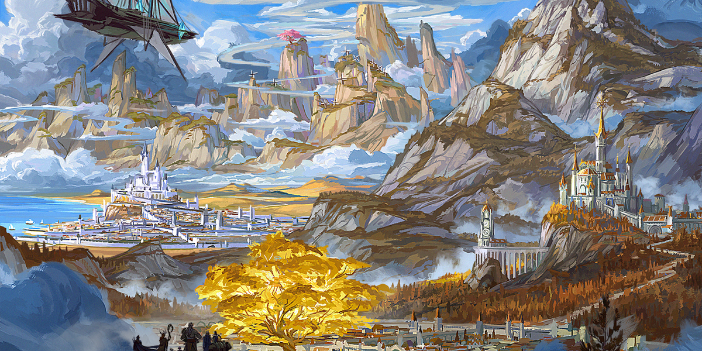
Grandes Reinos de Tal'Dorei
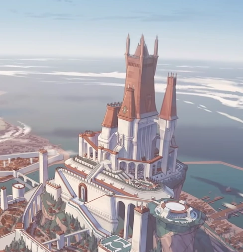
Emon
Capital de Tal'Dorei e maior cidade do continente. Abriga o Castelo de Emon e a famosa Biblioteca Real.
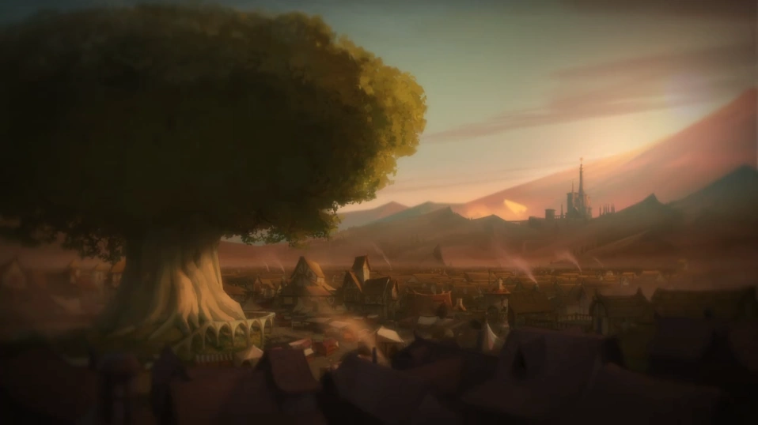
Whitestone
Cidade governada pela família de Percy. Tornou-se símbolo de resistência após derrotar os Briarwood.
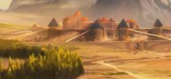
Westruun
Cidade guerreira que sofreu intensamente durante o ataque do Conclave Cromático.
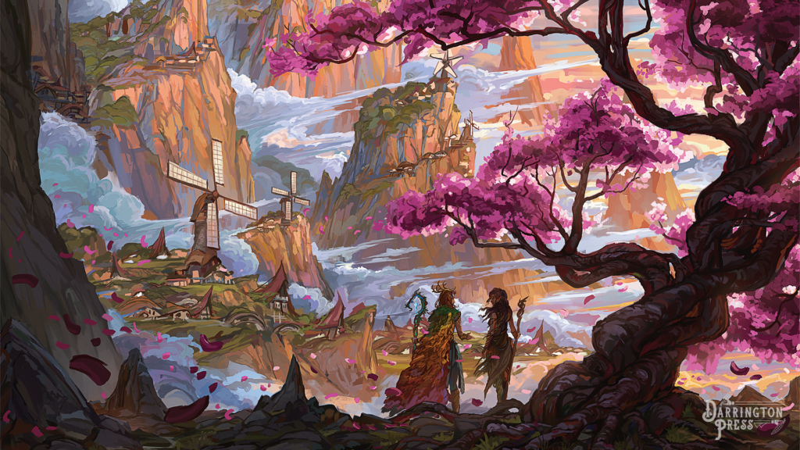
Zephrah
Lar dos Ashari do Ar e residência de Keyleth.
Vox Machina
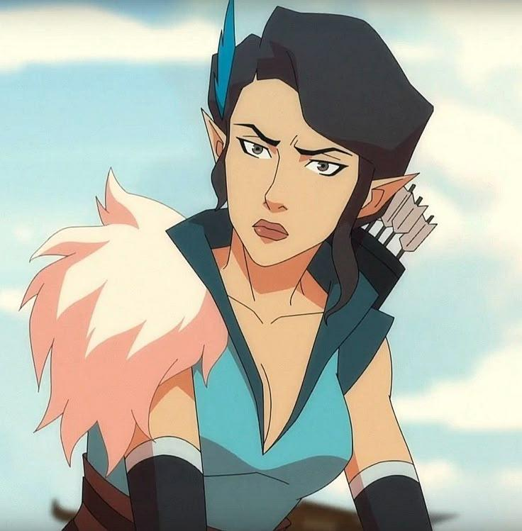
Vex'ahlia
Caçadora, arqueira e uma das fundadoras da Vox Machina.
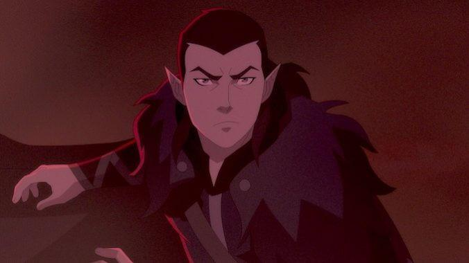
Vax'ildan
Ladino extremamente rápido e irmão gêmeo de Vex.
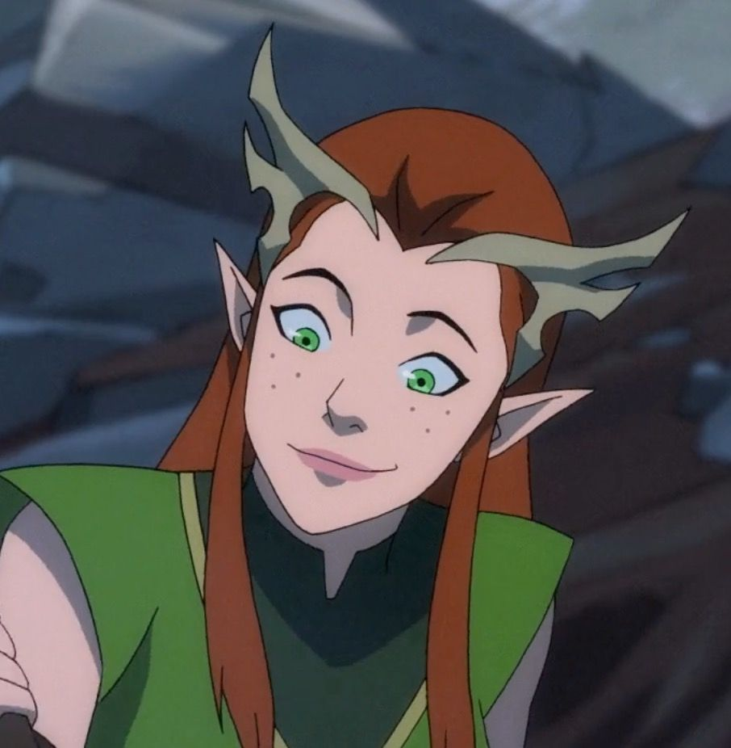
Keyleth
Druida dos Ashari que domina os elementos da natureza.
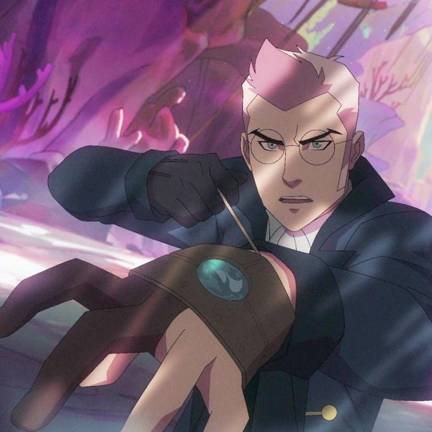
Percy
Lorde de Whithestone.
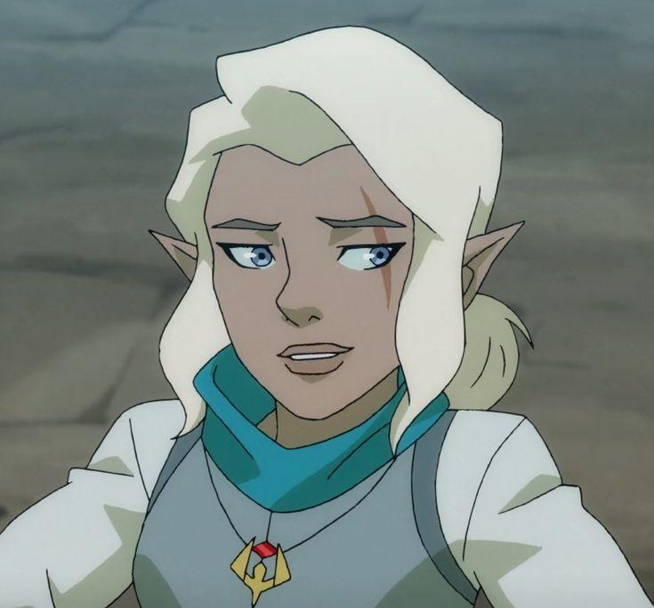
Pike
Clériga do Vox Machina.
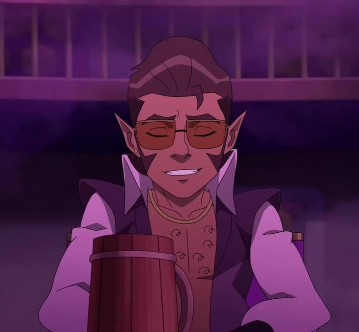
Scanlan
Um bardo bem humorado.
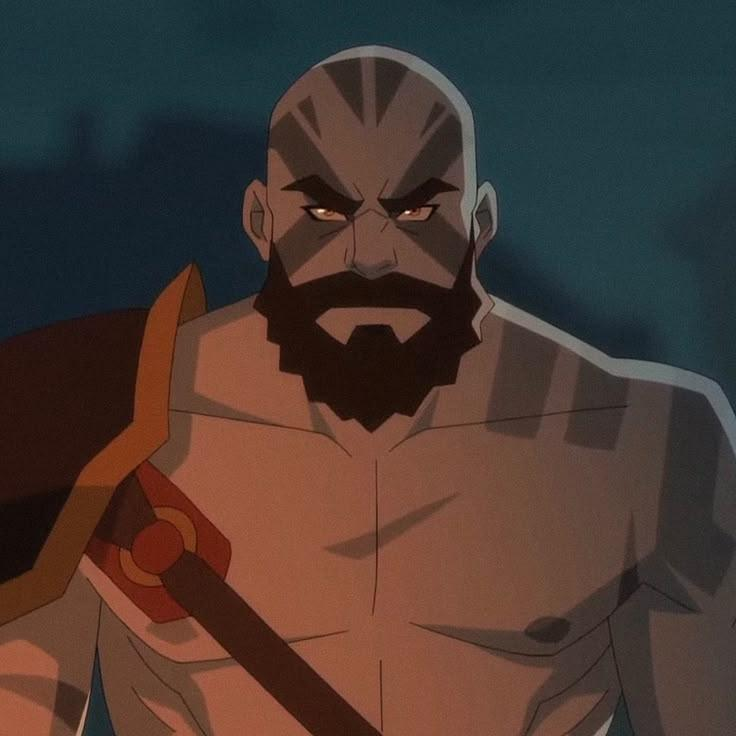
Grog
Um grande guerreiro que portará as manoplas.
Vestígios da Divergência
Os Vestígios da Divergência são artefatos lendários criados pelos deuses durante a Guerra da Divergência. Cada um concede poderes extraordinários ao seu portador e desempenhou um papel essencial na luta da Vox Machina contra o Conclave Cromático.

Deathwalker's Ward
Armadura sagrada da Matrona dos Corvos utilizada por Vax'ildan.

Fenthras
Arco mágico utilizado por Vex'ahlia que dispara flechas encantadas.

Titanstone Knuckles
Manoplas ancestrais que aumentam enormemente a força física de Grog.

Mythcarver
Espada lendária que amplifica o poder mágico e inspira aliados.
Conclave Cromático
Após a queda dos Briarwood, quatro dragões ancestrais atacam Tal'Dorei ao mesmo tempo. Unidos sob o nome de Conclave Cromático, eles conquistam cidades inteiras e quase destroem Exandria.

Thordak
O Rei das Cinzas, um dragão vermelho colossal e líder do Conclave.

Raishan
A Dragão Verde conhecida pela inteligência, manipulação e magia poderosa.

Vorugal
Um dragão branco gigantesco que transforma tudo ao seu redor em gelo.

Umbrasyl
O Dragão Negro conhecido por sua força e por acumular tesouros imensos.
Curiosidades
- A animação é baseada nas campanhas de RPG de Critical Role.
- Todos os protagonistas foram criados pelos próprios jogadores da mesa.
- A primeira temporada foi financiada por uma campanha histórica no Kickstarter.
- Matthew Mercer criou praticamente toda a história de Exandria.
- Os Vestígios da Divergência foram criados pelos próprios deuses.
- Vox Machina significa "A Voz da Máquina".
Linha do Tempo
Os acontecimentos abaixo resumem os principais eventos da jornada da Vox Machina.
Formação da Vox Machina
O grupo de aventureiros passa a trabalhar junto e aceita missões por todo Tal'Dorei.
Os Briarwood
Percy retorna para Whitestone e enfrenta Lord e Lady Briarwood ao lado de seus amigos.
Conclave Cromático
Quatro dragões ancestrais conquistam Tal'Dorei e obrigam a Vox Machina a procurar os Vestígios da Divergência.
Caçada aos Vestígios
Cada membro conquista artefatos lendários capazes de enfrentar os dragões.
Batalha Final
Após inúmeras batalhas, a Vox Machina derrota o Conclave Cromático e salva Tal'Dorei.